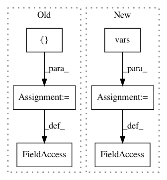

6ac655533f3faede22d4e44d41a6b6f4b1891ff4,benchmark.py,,,#,13
Before Change
PORT = 7779
PORT_OUT = 7780
common = {
"model_dir": "/data/cips/save/chinese_L-12_H-768_A-12",
"num_worker": 2,
"num_repeat": 5,
"port": PORT,
"port_out": PORT_OUT,
"http_port": None,
"http_max_connect": "10",
"cors": "*",
"max_seq_len": 40,
"client_batch_size": 2048,
"max_batch_size": 256,
"num_client": 1,
"pooling_strategy": PoolingStrategy.REDUCE_MEAN,
"pooling_layer": [-2],
"gpu_memory_fraction": 0.5,
"prefetch_size": 10,
"xla": False,
"cpu": False,
"verbose": False,
"config_name": "bert_config.json",
"ckpt_name": "bert_model.ckpt",
"tuned_model_dir": None,
"mask_cls_sep": False,
"device_map": [],
"priority_batch_size": 16,
"fp16": False
}
args = namedtuple("args_nt", ",".join(common.keys()))
globals()[args.__name__] = args
After Change
PORT_OUT = 7780
MODEL_DIR = "/data/cips/save/chinese_L-12_H-768_A-12"
common = vars(get_args_parser().parse_args(["-model_dir", MODEL_DIR, "-port", PORT, "-port_out", PORT_OUT]))
common["num_worker"] = 2 // set num workers
common["num_repeat"] = 5 // set num repeats per experiment
args = namedtuple("args_nt", ",".join(common.keys()))
In pattern: SUPERPATTERN
Frequency: 3
Non-data size: 6
Instances
Project Name: hanxiao/bert-as-service
Commit Name: 6ac655533f3faede22d4e44d41a6b6f4b1891ff4
Time: 2019-01-18
Author: hanhxiao@tencent.com
File Name: benchmark.py
Class Name:
Method Name:
Project Name: calico/basenji
Commit Name: 09b8381f7dd52c67fdd629825ff319271167d8c5
Time: 2019-07-11
Author: drk@calicolabs.com
File Name: basenji/seqnn.py
Class Name: SeqNN
Method Name: build_model
Project Name: calico/basenji
Commit Name: 71106ac70146d89b3e3e0774a5c27a98212e1405
Time: 2019-07-11
Author: geoff.fudenberg@gmail.com
File Name: basenji/seqnn.py
Class Name: SeqNN
Method Name: build_model